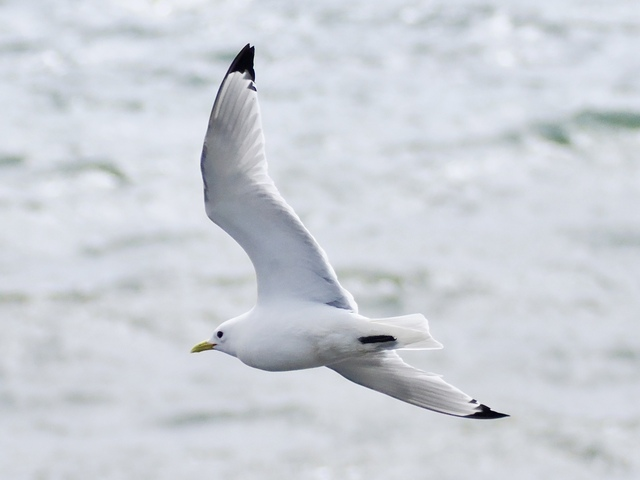
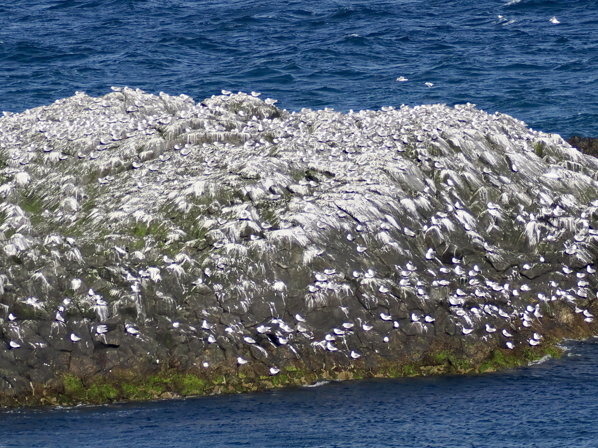
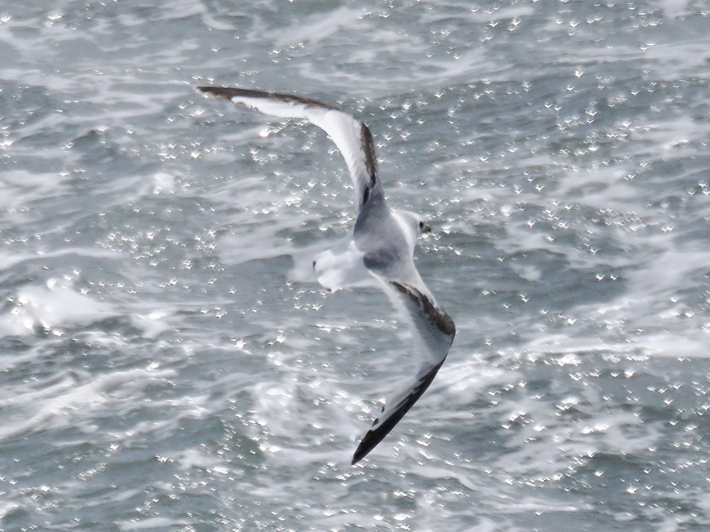

Black-Legged Kittiwake
Rissa tridactyla
Order: Charadriiformes
Family: Laridae

A small gull with a yellow bill and black legs. Wing tips are black. Hind toe is a tiny stub, giving the name tridactyla, meaning "three-toed".

During breeding season, can be found on coastal cliffs in large colonies. This rock is covered with kittiwakes thousands strong.

Juvenile has a dark "M" on the back.